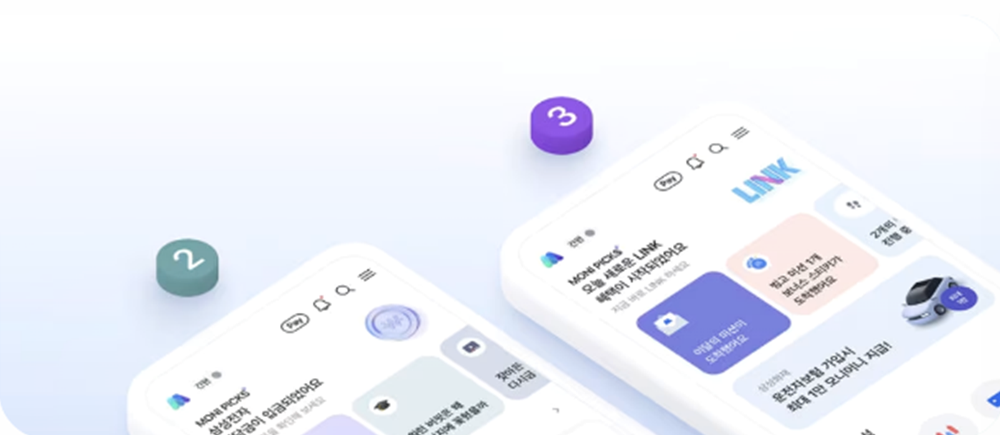
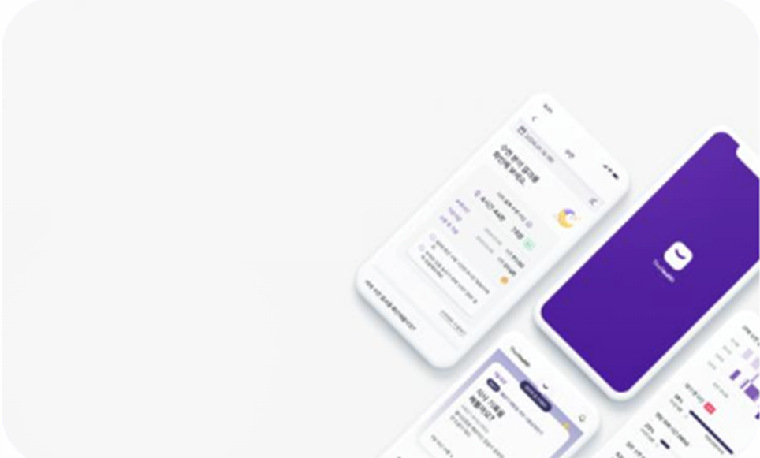

작게 실험하고 빠르게 증명하며, 고객이 납득하는 경험으로 연결합니다.
두려운 기술이 아니라, 함께 일하는 존재
직무별 탐색과 학습 허들을 낮추고, 새로운 시도를 자연스럽게 꺼내게 합니다.
업무 효율을 넘어서 실행 속도를 높이는 동료
반복 작업을 대신하고, 판단과 설계는 더 선명하게 남겨 팀의 전진 속도를 만듭니다.
고객의 불안과 이해 부족을 먼저 읽는 대변자
가격, 보장, 제한사항, 절차에 대한 불안을 줄여 가입까지 이어지는 경험을 설계합니다.
Connecting Life, Creating Value
사업부의 문제를 AX 과제로 번역하고,
사업부의 문제를 AX 과제로 번역하고,
바로 실행 가능한 형태로 전개합니다.
각 과제는 멋진 데모보다 실제 현업의 병목, 고객의 마찰, 운영의 비효율을 줄이는 방향으로 설계합니다.


Searching Items
시니어사업부
시니어사업부 AI과제 발굴중
현재는 탐색 단계입니다. 고객 문제, 실행 가능성, 데이터 접근성 기준으로 다음 후보를 발굴하고 있습니다.
About Us
서로 다른 전문성이 만나,
서로 다른 전문성이 만나,
AX 과제를 실제 추진력으로 바꿉니다.
Crew 01
UX기반 디지털혁신 전문가
오영석 프로
변화를 고민하고, 적용하고, 결과를 보는 과정 자체를 즐겨요.
Crew 02
Data기반 분석전문가
홍정인 프로
데이터를 해석하는 데서 그치지 않고, 인사이트를 뽑고 실행하는 걸 좋아해요.
Crew 03
헬스케어기반 디지털전문가
이건주 프로
더 나은 고객 경험을 고민하며, 아이디어를 현실적인 가치로 연결하고 싶어요.